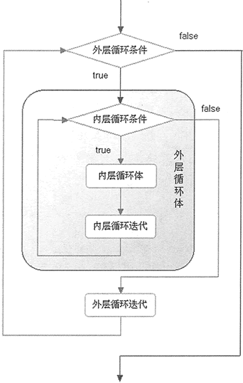
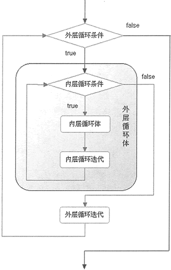

首页 > Python > Python流程控制
Python（for和while）循环嵌套及用法
Python 不仅支持 if 语句相互嵌套，while 和 for 循环结构也支持嵌套。所谓嵌套（Nest），就是一条语句里面还有另一条语句，例如 for 里面还有 for，while 里面还有 while，甚至 while 中有 for 或者 for 中有 while 也都是允许的。
当 2 个（甚至多个）循环结构相互嵌套时，位于外层的循环结构常简称为外层循环或外循环，位于内层的循环结构常简称为内层循环或内循环。
循环嵌套结构的代码，Python 解释器执行的流程为：
循环嵌套的执行流程图如图 1 所示：

图 1 循环嵌套的执行流程图
下面程序演示了 while-for 嵌套结构：
根据上面的分析，此程序中外层循环将循环 10 次（从 i=0 到 i=9），而每次执行外层循环时，内层循环都从 j=0 循环执行到 j=9。因此，该嵌套循环结构将执行 10*10 = 100 次。
事实上，if 语句和循环（while、for）结构之间，也可以相互嵌套，举个例子：
需要指明的是，上面程序演示的仅是 2 层嵌套结构，其实 if、while、for 之间完全支持多层（ ≥3 ）嵌套。例如：
当 2 个（甚至多个）循环结构相互嵌套时，位于外层的循环结构常简称为外层循环或外循环，位于内层的循环结构常简称为内层循环或内循环。
循环嵌套结构的代码，Python 解释器执行的流程为：
- 当外层循环条件为 True 时，则执行外层循环结构中的循环体；
- 外层循环体中包含了普通程序和内循环，当内层循环的循环条件为 True 时会执行此循环中的循环体，直到内层循环条件为 False，跳出内循环；
- 如果此时外层循环的条件仍为 True，则返回第 2 步，继续执行外层循环体，直到外层循环的循环条件为 False；
- 当内层循环的循环条件为 False，且外层循环的循环条件也为 False，则整个嵌套循环才算执行完毕。
循环嵌套的执行流程图如图 1 所示：

图 1 循环嵌套的执行流程图
下面程序演示了 while-for 嵌套结构：
i = 0
while i<10:
for j in range(10):
print("i=",i," j=",j)
i=i+1
可以看到，此程序中运用了嵌套循环结构，其中外循环使用的是 while 语句，而内循环使用的是 for 语句。程序执行的流程是：由于程序输出结果篇幅太长，读者可自行拷贝代码并执行，观察其执行结果。
- 一开始 i=0，循环条件 i<10 成立，进入 while 外循环执行其外层循环体；
- 从 j=0 开始，由于 j <10 成立，因此进入 for 内循环执行内层循环体，直到 j=10 不满足循环条件，跳出 for 循环体，继续执行 while 外循环的循环体；
- 执行 i=i+1 语句，如果 i<10 依旧成立，则从第 2 步继续执行。直到 i<10 不成立，则此循环嵌套结构才执行完毕。
根据上面的分析，此程序中外层循环将循环 10 次（从 i=0 到 i=9），而每次执行外层循环时，内层循环都从 j=0 循环执行到 j=9。因此，该嵌套循环结构将执行 10*10 = 100 次。
嵌套循环执行的总次数 = 外循环执行次数 * 内循环执行次数
事实上，if 语句和循环（while、for）结构之间，也可以相互嵌套，举个例子：
i = 0
if i<10:
for j in range(5):
print("i=",i," j=",j)
程序执行结果为：
i= 0 j= 0
i= 0 j= 1
i= 0 j= 2
i= 0 j= 3
i= 0 j= 4
需要指明的是，上面程序演示的仅是 2 层嵌套结构，其实 if、while、for 之间完全支持多层（ ≥3 ）嵌套。例如：
if ...:
while ...:
for ...:
if ...:
...
关注公众号「站长严长生」，在手机上阅读所有教程，随时随地都能学习。内含一款搜索神器，免费下载全网书籍和视频。

微信扫码关注公众号